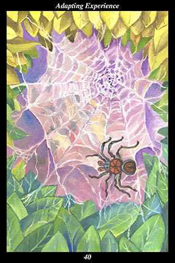

 | IMAGE A spider waits for its quarry to fall prey to the design of its web. The web is constructed in the empty space between two branches to catch unwary insects mistaking it for a natural passageway through which to fly. |
INTERPRETATION
This hexagram depicts the art of learning. The spider symbolizes natural skill, calm patience, and creative adaptability. That it waits for its quarry to fly into its web means that you wait for
benefit to seek you rather than you seeking it. The design of the web symbolizes a perfect and unchanging model of effectiveness that must constantly be adapted and changed to fit the circumstances at hand. That the web is constructed in an empty space that can be mistaken for a natural passageway means that the best trap looks like the best opportunity. Taken together, these symbols mean that you continue to make progress by learning how to better surprise yourself with every new experience.
ACTION
The spirit warrior does not allow past successes to interfere with learning. It is a mistake to look at new experiences solely in the light of past experience: to see each new moment merely as an extension of what has come before blinds us to the on-going act of creation making the universe anew every moment. In this sense, the more we learn, the more prone we are to view things according to what we have learned—and when our new experiences merely serve to reinforce what we already know, then learning effectively stops and we are guided by our expectations. The spider can never spin the same web twice: branches grow and move, leaves sprout and fall off, the wind comes and goes, the seasons pass and return, a web that ensnares an insect must be repaired or replaced, the spider moves to another tree or bush. That which we seek, that which we need for nourishment, that by which we learn and grow and create, that which we call understanding, eludes us until we turn all we have learned to an exploration of the new and unexpected in every experience. In order to have new experiences, then, we learn to experience life in new ways—if we are to trap the quarry of ever-evolving learning and growth and creativity, then we must use those strands of learning, growth, and creativity to weave an ever-evolving way of seeing and knowing the world as the newborn creation it truly is. What is true for the world is also true for ourselves: the sum of all our body’s experiences must not be mistaken for our immortal newborn spirit.
INTENT
It is best to use what you know as a foundation from which to start over with something completely new. There is more progress to be made by exploring new aspects of long-standing endeavors than by trying to complete them in their existing form. Watch your reactions and listen to your thoughts, encouraging the creative and insightful ones while discouraging the automatic and habitual. Avoid falling prey to others’ traps: be especially wary of new opportunities that offer sudden wealth, success, recognition, or influence. Real advancement can be had by adapting all your skill and knowledge to the task of creating a clearing in your life where
benefit can accumulate to meet the need of the greatest number.
SUMMARY
Although the skills and strategies you have learned in life can be successfully adapted to present circumstances, it is the skills and strategies you have not yet learned that hold the keys to your real happiness. Don’t simply rely on what has worked before. If you are not getting the reactions you want, then keep changing what you are doing until you do. Experiment and thrive.
THE LINE CHANGES
1° In dealing with people whose animal nature is not yet tamed, first assess whether their moment of metamorphosis is at hand. Except in the rare cases where it is, present nothing interesting that might catch their attention. Save your energy for those open to change.
2° In dealing with partners, be like acrobats who are continuously making slight adjustments to keep in balance with each other’s smallest movements. Provide a counterbalance to the other’s extremes. Communicate closely and often about shared values and visions so no negative influence may enter.
3° In dealing with people in the workplace, do not form cliques or engage in power struggles. Neither give offense nor take offense—make it easy for others to get along with you. Work to make your reactions more consistent and predictable—allow people to count on you and all will go well.
4° In dealing with those above and below, it is not enough to merely be effective—you must spend time cultivating relationships, especially with those below, otherwise people imagine your interests lie elsewhere. Enjoy being more social. Without the confidence of both, you can serve neither.
5° In dealing with leading others, you must be able to adjust your thinking to the circumstances at hand—do not lead people over the cliff of ideology. Elicit advice from all sides—do not cater to any faction whatsoever. Lead with humility and the highest ethics.
6° In dealing with exile, first entertain no nostalgia about the past. Then, stay focused on your long-range goals but intersperse your efforts with new avenues of study and new experiences. This can be the most meaningful time of your life if you keep learning, evolving, and leaning forward.